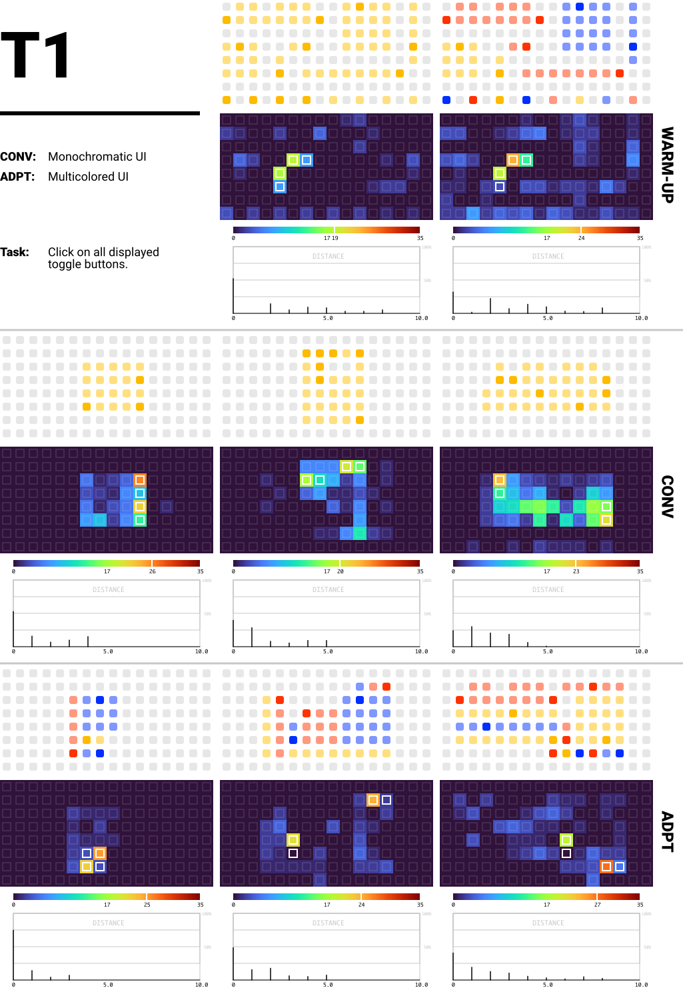
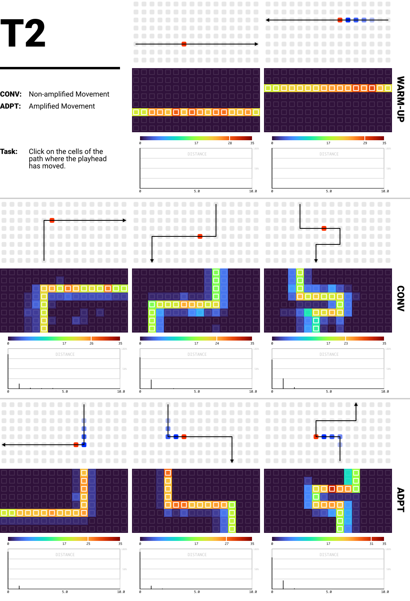

Towards User Interface Guidelines for Musical Grid Interfaces
Abstract
Musical grid interfaces are becoming an industry standard for interfaces that allow interaction with music software, electronics, or instruments. However, there are no clearly defined design standards or guidelines, resulting in grid interfaces being a multitude of interfaces with competing design approaches, making these already abstract UIs even more challenging. In this paper, we compare the co-existing design approaches of UIs for grid interfaces used by commercial and non-commercial developers and designers, and present the results of three experiments that tested the benefits of co-existing design approaches to mitigate some of the inherent design challenges.
Author Keywords
Musical Grid Interface; Design Guidelines; Color; Movement; Transitions.
CCS Concepts
•Human-centered computing → Usability testing; HCI theory, concepts and models;
Introduction
Musical grid interfaces (as defined in [1]) are now an established standard in the design of new musical interfaces and instruments [1] and become the object of research [2][3][4] in the HCI community. They combine tangible interaction and its associated benefits with the flexibility of screen-based interfaces. While this interface form has the potential to become a new "canonical instrument" [1] in the long run, its generic nature and a diverse user base that emphasizes its quality of a customizable "white canvas" [1] for musical ideas, processes, and tools are at odds with this goal. Further, different designers and manufacturers follow along with their own design principles to create a coherent user experience within these microcosms, but no overarching design principles for the design of user interfaces (UIs) displayed on grid interfaces are consistently defined on the macro layer.
In this paper we want to do the first steps to evaluate advantages of different existing design principles for grid UIs and thus contribute to an objective discussion about possible design guidelines in the context of musical grid interfaces. We therefore try to answer the following research question:
RQ: What are advantages and disadvantages of co-existing design approaches?
Due to the limited scope of a single research paper, we concentrate on three UI design foci: (1) the use of color, (2) the emphasize of movement, and (3) the utilization of animations for transitions.
To examine the impact of different approaches within the foci, we conducted an interactive online study (n=24) with an emulated grid, evaluating click behavior, task completion times, and error rates in addition to qualitative feedback and perceived workload ratings (RTLX). Thus, we can show that for each focus a preferred approach exists and that significant differences in performance are observable.
We contribute with this paper, (1) the statistical comparison of co-existing design approaches for three foci, and (2) the contextualization of the statistical findings with qualitative results and needs and requirements.
Background & Related Work
Let's start this background section with the general question of why it can be beneficial to use uniform UI standards.
The main reasons are that UI designers want to (1) "reduce learning" and (2) "eliminate confusion"1. Thus, competing standards are not only inconvenient, but perhaps even harmful, as they cause users to confuse their mental models and apply them in the wrong context.
Regarding operating systems (OS), we have well-established guidelines and conventions to eliminate this problem. While different platforms define their own rules and guidelines (cf. Google’s Material Design2) the core principles and main UI elements are based on the "de facto standard" [5] of the WIMP (windows, icons, menus, pointers) paradigm. This allows users who are familiar with one OS to transfer their knowledge to other OSs and technologies.
In the context of musical grid interfaces, the design of consistent and understandable UIs is further constrained by their inherent limitations due to their limited resolution or limited feedback capabilities.
Grid UI Challenges
Many challenges in the context of musical grid interfaces are coherent with challenges of low resolution lighting displays, which include resolution and viewing distance [6] and design challenges of the artifacts and process [7].
The additional challenge is that through the limitations enforced by the low resolutions, subtle differences normally encoded visually are not representable. The essential challenge is to "encode explicit information sources in a low resolution" [8]. In addition to the limited resolution many musical grid interfaces further are restricted by the available colors and use beside full RGB also bi-chromatic and mono-chromatic feedback [1]. With limited colors the challenge of information representation becomes more prominent since established strategies such as encoding "information as color" [9] is highly restricted.
As a result, many established design paradigms such as the gestalt principles [10][11] or the use of white space [12] are not applicable or come with the cost of loosing precious interactive space.
NIME UIs
The design if UIs in the NIME context is a complex field of research in itself [13][14]. The following is a summary on some of the most important research on UIs in the context of musical grid interfaces.
While in the design of analog instruments there is an inherent connection between the gestural movements and the resulting musical gestures, such mappings must be designed for digital instruments [15][16]. In this context, analog instruments are understood primarily as tools that take human input and convert it into music in real time; this excludes other types of analog music machines such as the "player piano" [17], music boxes, or music automatons, which create sound analogously. In contrast, "digital," "electronic", "non-analog" instruments often have the additional aspect that they are programmed or controlled to make music [18], i.e., that the musical gesture is decoupled from the gestural movement. As a result one of the central goals in designing NIMEs is "to overcome any concern about authenticity in performance" [19]. However, in addition to being "Instruments in the traditional sense", musical interfaces can also have a variety of faces, such as being "Ornaments of their acoustic sound" or even "Conversation partners" in the production of music [20].
For grid interfaces, all these different aspects are involved. Which makes the design of their UIs dependent on the context and the associated needs, requirements, and goals of the musicians. Furthermore, such interfaces often combine these elements and allow for simultaneous playing, controlling, and conducting [21], which requires musicians to successfully operate, navigate, and execute the interface before the musical expression can be considered.
User Study
To identify aspects of grid UIs which need improvement, we conducted a pre-study to investigate pain-points and potential solutions. We then used these insights to determine the three foci of the main study experiments.
Pre-Study
Using an online questionnaire, we identified challenges in the interaction with musical grids. We recruited participants from the lines forum and social media. In total, 23 musicians (self-identified: 21 male, 2 non-binary) between the ages of 16 and 54 participated. All participants agreed that the collected data is used for scientific publication in an anonymous form. 18 participants stated that they use grid-controllers more than once a month, indicating representative expertise.
In the questionnaire participants answered to open ended questions (see Table 1) and rated statements deduced from literature [1]. We analyzed the responses and clustered occurring themes.
Q1 | “In comparison to other input interfaces, which advantages has a Midi grid controller to you?” |
Q2 | “While operating the Midi grid controller, have you encountered any difficulties?” |
Q3 | “Has the visual representation/feedback caused any problems? If so, please describe them.” |
Q4 | “Describe a situation in which the functionality of all buttons was not clearly distinguishable.” |
Q5 | “Describe a situation in which the displayed visual information/state did not identify its underlying mode or functionality.” |
Q6 | “Describe a situation where you switched between modes/functions without being aware of their state.” |
Q7 | “Describe a situation where you did not recognize a temporal sequence based on its visual representation.” |
Regarding Q1, the participants stated that the versatility, flexibility and easy usability (n=9) and the visual and tactile feedback (n=6) are exceptional advantages compared to other musical interfaces. In addition, physical factors such as size and compactness (n=3), DAW support (n=4) and advantages over keyboard interfaces (n=3) were mentioned.
Deduced from the feedback to Q2-Q7 we identified the six areas of potential problems and challenges (see Table 2).
A1 | Orientation and navigation on the grid. | n=16 |
A2 | Information on the button functionality. | n=12 |
A3 | Identification of visual information and feedback. | n=9 |
A4 | Limitation due to manufacturing and connectivity. | n=7 |
A5 | Training phase and relearning familiar patterns. | n=7 |
A6 | Complexity of systems and representation of extensive musical functions. | n=5 |
Main-Study
For the main study, we focused on A1-A3 and excluded A4-A6 because they are less related to UI design decisions and more to manufacturing, hardware design, and system inherent complexity.
Participants
We recruited participants via llllllll.co, due to its expertise-wise homogeneous user base and via social media. In total 37 participants started the study, from which 24 data sets could be used. 18 from the 24 participants (self-identified as: 20 male, 2 female, 2 unspecified; 24-58 years, mean: 32 years) use grid interfaces once a year or more often, four participants use grids weekly.
We excluded participants (1) if the survey page was reloaded, which may have affected results, (2) if a given trial exceeded the specified duration, which indicated server problems, and (3) if not all tasks were completed.
As an incentive and as compensation for the time, we had a prize draw for Bandcamp vouchers worth up to 50€. Participation was voluntary and all participants agreed that their data is used for scientific publication in anonymized form.
Study Setup
The study was conducted as an interactive online experiment, which combined questionnaires, free text answers and interactive experiments implemented with JavaScript. The experiments emulated a virtual 16*8 grid and included three tasks each comparing two conditions: (T1) Monochromatic vs. Multicolored UIs; (T2) Non-amplified vs. Amplified Movement; (T3) Immediate vs. Animated Transitions.
The conditions were modeled following a “conventional” (CONV) and an “adapted” (ADPT) approach. Conventional approaches are defined as widely used and common. This may be due to technological limitations such as the historically prevalent non-RGB feedback [1], or simply due to minimalist aesthetics. Similarly, "adapted" refers to approaches that extend conventional ideas. This classification was only used internally to avoid participant bias.
The conditions were repeated with three complexity levels in increasing order to investigate the effect depending on the prevailing difficulty. This was done for T1 and T2, since T3 used an unknown secondary task to evaluate the effect and further repetitions could not be used to evaluate the same effect.
All participants executed T1, T2, and T3 with both conditions in all difficulty levels. While the order of the tasks and difficulties stayed the same, the conditions were counter-balanced. Of the 24 participants, 11 belong to group A who started with CONV and 13 to group B who started with ADPT.
After each level, participants had to complete the Raw NASA TLX (RTLX) [22] to measure the perceived workload. Further, we measured (1) Time: task completion time; (2) Errors: incorrectly clicked cells; (3) Distance: deviation to the targets. We used the ANOVA for repeated measures to statistically evaluate the effect both, condition and level, have on the four measures.
For a visual analysis of the data, we used heat-maps and spectrograms. Because the heat-maps aggregate the performance of all participants, they visually reveal usage patterns. The heat-maps use the turbo3 color scheme (dark-blue = 0; dark-red = 35) and mark the valid targets with a strong white outline. The spectrograms plot the minimum distances of all clicks to the next valid target. Distances are rounded so that both error vectors 1,0) and 1,1) give d=1. The spectrogram reveal whether errors occur near the targets (d=0).
T1: Monochromatic vs. Multicolored UIs
While more and more manufacturers utilize color in the design of grid interfaces (cf. Ableton Push 2) and this may be a factor that will become standardized, comments from users emphasize the aesthetic value they associate with the monochromatic designs (cf. monome grid). The resulting question is, if this aesthetic preference affects the usability? To evaluate the impact of color to recognize UI elements, we created pseudo UIs which are composed from commonly used UI elements (toggle-buttons, momentary-buttons, radio-buttons, keyboards, button-matrices) [23]. Each element was defined by a default and highlight color/brightness value. Thus, a radio-button e.g. shows x cells illuminated in default and one highlighted.
The task of the participants was to click on all toggle-buttons. To test the importance of color with increasing UI complexity, we defined the complexity value of the UIs as the number of possible displayed toggle-buttons. This means all combinations of adjacent cell pairs with one cell being illuminated in default and the other being highlighted.
Participants started with a warm-up task to get familiar with the UI elements.
Heat-Map Evaluation
Image 1 shows the three levels within the two conditions (2nd and 3rd row) and the warm-up task (1st row). The UIs shown to the participants are displayed above the associated heat-maps. Based on the heat-maps and spectrograms we can define the following observations:
First, for ADPT we generally found a stronger contrast between the intended targets and the remaining area in all 3 levels. This indicates that color helps distinguish UI elements, as less deviation is visible.
Second, for CONV, as complexity increases, we observed that adjacent cells are increasingly misjudged as targets. This suggests that the presumed problem of differentiability in dense UIs with monochromatic feedback is a realistic usability problem if users are not already familiar with the interface.
Third, we identified a stronger contrast between the cells of the toggle button in ADPT compared to CONV. It should be emphasized that the state only changed when the non-highlighted cell was pressed. One hypothesis as to why participants showed different confidence could be that in the visual homogeneity of CONV, users needed a second proof that the interaction was valid, leading to the hypothesized behavior of two cells changing default and highlight color. In contrast, identification in ADPT was likely based primarily on visual appearance and did not necessarily need to be proven by interaction.


T1: The participants had to click on all toggle buttons displayed in the individual UIs. The second row depicts the three levels of CONV (easy to difficult from left to right) and the third row the levels of ADPT.
Statistical Results
For all three levels we found that ADPT performed better on average regarding the four measures (cf. Table 3).
TASK 1 – MEANS | |||||
Condition | Time (s) | Errors | Distance | RTLX | |
|---|---|---|---|---|---|
Level 1 | CONV | 12.29 | 1.96 | 0.64 | 36.35 |
ADPT | 6.75 | 0.71 | 0.17 | 25.17 | |
Level 2 | CONV | 14.17 | 2.79 | 0.86 | 38.30 |
ADPT | 8.17 | 1.46 | 0.22 | 19.86 | |
Level 3 | CONV | 21.17 | 5.71 | 0.66 | 47.50 |
ADPT | 11.71 | 2.25 | 0.51 | 24.06 | |
The ANOVA results (Table 4-Table 7) reveal that for all four measures a statistical significant (p<0.05) difference between the two conditions exists.
TIME | ||||||
Predictor | dfNum | dfDen | Epsilon | F | p | η2g |
|---|---|---|---|---|---|---|
Condition | 1.00 | 23.00 | 26.56 | .000 | .18 | |
Level | 1.99 | 45.88 | 1.00 | 19.90 | .000 | .14 |
Condition x Level | 1.65 | 37.97 | 0.83 | 1.74 | .194 | .01 |
ERRORS | ||||||
Predictor | dfNum | dfDen | Epsilon | F | p | η2g |
|---|---|---|---|---|---|---|
Condition | 1.00 | 23.00 | 18.64 | .000 | .05 | |
Level | 1.29 | 29.56 | 0.64 | 9.10 | .003 | .05 |
Condition x Level | 1.49 | 34.37 | 0.75 | 5.12 | .018 | .01 |
DISTANCE | ||||||
Predictor | dfNum | dfDen | Epsilon | F | p | η2g |
|---|---|---|---|---|---|---|
Condition | 1.00 | 23.00 | 10.35 | .004 | .08 | |
Level | 1.98 | 45.47 | 0.99 | 1.78 | .181 | .01 |
Condition x Level | 1.63 | 37.58 | 0.82 | 2.57 | .099 | .02 |
RTLX | ||||||
Predictor | dfNum | dfDen | Epsilon | F | p | η2g |
|---|---|---|---|---|---|---|
Condition | 1.00 | 23.00 | 39.45 | .000 | .23 | |
Level | 1.70 | 39.19 | 0.85 | 7.16 | .003 | .03 |
Condition x Level | 1.83 | 42.11 | 0.92 | 3.92 | .031 | .02 |
Qualitative Analysis
When the participants reported on the advantages of both conditions, 15 stated that color helped them in differentiating the UI elements. They pointed out that "you identify different elements more easily with colored grids" (ID412) and that it was easier "to understand which buttons belong together" (ID447). However, 4 participants found that the color created a "hectic" (ID407) appearance which increased the difficulty. This visual overload also stimulated to search "for meaning in the color" (ID362). Further, 2 participants pointed out the aesthetic qualities of CONV and the more minimalistic design experience.
When asked which of the options they preferred, 20 participants chose ADPT for this experimental setup.
Participants also provided suggestions on how to improve the problem. 10 participants suggested whitespace to separate UI elements, 4 recommended other color properties such as shades or saturation, 3 proposed that grouping by element type or by a logical order would help to understand the UI, 2 suggested semantically coloring elements by type, and 2 suggested animations such as blinking. They further mentioned multi-page-layouts, following more design conventions, and customizable colors.
T2: Non-amplified vs. Amplified Movement
Our analysis has shown that moving elements such as "playheads" conventionally move in discrete intervals and are displayed in a static manner, but sometimes they are emphasized with animations (cf. buoys) or pulsation (cf. Novation Circuit). This could be due to different intentions, which are unconfirmed hypotheses of the authors. As reasons we suspect:
(1) Overcoming Distinct Increments: If time increments smaller than the provided resolution are to be displayed, this can be achieved by illuminating two cells with a shifting illumination ratio;
(2) Representing Movement within One Image: When static images (video stills) are viewed, moving objects cannot be identified. Using, e.g., a fading tail at the previous positions would represent motion and direction within a still image.
In T2, the task was to remember the path of a moving playhead. For CONV, only the current position was highlighted, while for ADPT, the 4 previous positions were also illuminated in fading intensity.
The complexity is defined by the number of turns in the 16-step path. The warm-up stage included 0 turns, while the level 3 path included three turns.
The mouse pointer was hidden while the playhead moved across the grid so that it was not possible to click or hover over specific cells. Then they had to click on the cells of the path from memory.
Heat-Map Evaluation
Based on the heat-maps and spectrograms (Image 2) we define the following observations:
First, in cases where a playhead does not change direction the task is trivial and thus there is no advantage from amplified movement, at least in the investigated task.
Second, the clicks on the path appear more consistent for Level 1 and Level 2 in the ADPT case. This is visually represented by a warmer and more consistent color distribution.
Third, for ADPT Level 2 and Level 3, the path has a larger deviation at the end, suggesting that users memorize the path from the beginning to the end, which would lead to better recall at the beginning and lower performance in reconstructing the end.


T2: The participants had to click on all cells of the path. The direction is indicated with the small arrows. The second row depicts the three levels of CONV (easy to difficult from left to right) and the third row the levels of ADAPT.
Statistical Evaluation
The task showed that in the ADPT condition the participants performed better regarding three of the four collected measures. On average they had less errors, were closer to the targets, and had a lower perceived task load for all levels. Interestingly, CONV was consistently faster. We assume that the increased time for ADPT indicates better stored and processed information, which reflects in the better performance regarding the other measures. More time is required to retrieve the information, but a lower workload is created and better performance is retrieved.
Condition | Time (s) | Errors | Distance | RTLX | |
|---|---|---|---|---|---|
Level 1 | CONV | 10.92 | 2.33 | 0.18 | 32.81 |
ADPT | 12.92 | 1.17 | 0.06 | 30.90 | |
Level 2 | CONV | 12.08 | 3.04 | 0.22 | 38.37 |
ADPT | 14.17 | 1.25 | 0.08 | 34.20 | |
Level 3 | CONV | 13.92 | 4.50 | 0.27 | 53.92 |
ADPT | 15.04 | 3.25 | 0.18 | 40.97 |
The ANOVA shows that the described differences between conditions are statistically significant for all four measures (p<0.05).
TIME | ||||||
Predictor | dfNum | dfDen | Epsilon | F | p | η2g |
|---|---|---|---|---|---|---|
Condition | 1.00 | 23.00 | 19.20 | .000 | .06 | |
Level | 1.71 | 39.40 | 0.86 | 7.22 | .003 | .08 |
Condition x Level | 1.95 | 44.75 | 0.97 | 0.54 | .583 | .00 |
ERRORS | ||||||
Predictor | dfNum | dfDen | Epsilon | F | p | η2g |
|---|---|---|---|---|---|---|
Condition | 1.00 | 23.00 | 8.71 | .007 | .04 | |
Level | 1.97 | 45.25 | 0.98 | 4.66 | .015 | .07 |
Condition x Level | 1.41 | 32.34 | 0.70 | 0.18 | .761 | .00 |
DISTANCE | ||||||
Predictor | dfNum | dfDen | Epsilon | F | p | η2g |
|---|---|---|---|---|---|---|
Condition | 1.00 | 23.00 | 7.43 | .012 | .06 | |
Level | 1.97 | 45.39 | 0.99 | 3.01 | .060 | .04 |
Condition x Level | 1.41 | 32.37 | 0.70 | 0.17 | .763 | .00 |
RTLX | ||||||
Predictor | dfNum | dfDen | Epsilon | F | p | η2g |
|---|---|---|---|---|---|---|
Condition | 1.00 | 23.00 | 8.13 | .009 | .03 | |
Level | 1.64 | 37.76 | 0.82 | 33.22 | .000 | .12 |
Condition x Level | 1.95 | 44.92 | 0.98 | 7.75 | .001 | .02 |
Qualitative Analysis
As advantages of the tail, 7 participants named the extended visibility of previous positions which helped them memorize the path and perceive it in their "peripheral vision" (ID303). This helped in identifying turns (n=4) since the feedback "better showed the corners where the point changed the direction" (ID370), changes in direction (n=2), and enabled them to move their attention between the current and previous positions (n=2). This helped to "recover past steps if [one] loose[s] attention for [a] brief moment" (ID346).
When asked for their preferred condition, 20 chose ADPT especially for applications "with moving elements that are making complex shapes" (ID362) or "for big grids" (ID460). 1 participant stated to prefer CONV and 3 experienced both conditions as "stressful" (ID412) and the task as difficult.
Compared to T1, the participants had fewer distinct and more homogenous ideas for optimization. This could be due to the more abstract setup of T2. They mentioned variations such as slower fade-out time (n=7), highlighting turning points (n=5), and a stronger emphasize on the leading cell compared to the tail (n=1).
T3: Immediate vs. Animated Transitions
The last approach we investigated, is the use of animations in applications to transition between multiple pages, menu structures [2], or semantical layers (cf. deluge). We found that this created a perception of spatial context as opposed to immediate transitions. Such transitions could either be planar movements in horizontal or vertical direction or zoom-in or zoom-out transitions when transitioning "into" or "out" of something.
Since such transitions are the baseline in touchscreen devices (swiping between apps) and desktop environments, we were interested to investigate if such animations help to construct a spatial understanding of the application which potentially benefits successful navigation.
To do so, we arranged 6 pages in a 3x2 matrix. Each page displayed an arbitrary amount of buttons which had to be pressed as the primary task. Further, each page showed one of the letters "A" to "F" in no specific order. In CONV the pages switched immediately, in ADPT the transitions were animated. Participants used an arrow-key-style navigation which allowed to go to the adjacent pages. While the participants were instructed to execute the primary task (clicking the buttons), they were tested afterwards on their recollection of the letter arrangement. To do this, they chose from 3 solutions that had a congruence of either 6/6, 3/6, or 2/6, or they indicated that they are unable to identify the solution.
We repeated this experiment twice and with no difficulty levels, since we were interested in the performance regarding their implicit receptivity of the spatial layout and in their performance when the task was known and they could point their attention to the main task. Both conditions were counterbalanced so that learning effects are balanced out.
Since the time to solve the task is artificially extended through the animation time and the task of clicking the buttons was only created to create a context to investigate the effect of transition animations, we primarily focussed on the qualitative analysis and the performance within the recollection task.
Statistical Evaluation
Without explicit instruction, the participants performed equally bad on the recollection task. Only 27.27% (n=3) identified the correct layout for CONV and 23.08% (n=3) for ADPT. Almost all other participants were not able to assign an options with certainty.
When they did the task for the second time, they adapted their focus and managed to recognize the correct formation for 72.72% (n=8) for CONV and for 69.23% (n=9) for ADPT. These observations are purely on a descriptive level since the within-subject design prevents any statistical evaluation due to the reduced subject count and the unbalanced group distribution.
Under these circumstances, we consider the performance for both conditions to be approximately identical.
First Encounter | ||||
6/6 | 3/6 | 2/6 | - | |
|---|---|---|---|---|
CONV | 27.27% | 9.09% | 9.09% | 54.55% |
ADPT | 23.08% | 0% | 0% | 76.92% |
Second Encounter | ||||
6/6 | 3/6 | 2/6 | - | |
|---|---|---|---|---|
CONV | 72.72% | 0% | 0% | 27.27% |
ADPT | 69.23% | 0% | 0% | 30.77% |
Qualitative Analysis
When asked for problems, 7 participants reported that they had problems navigating with the arrow keys. They were confused about the navigation restrictions in the borders of the 3x2 layout and generally would have preferred a navigation which directly represents the page layout. We deliberately decided against such a navigation, as it would have counteracted the focus on spatial mental model constructed from transitions, and would not scale to larger applications. 4 participants mentioned that they had trouble to understand the layout and initially assumed that they would be arranged in the same pattern as represented by the navigation tool (T shape). This feedback indicates that this task would have required a warm-up to familiarize the participants with the navigation and layout beforehand.
Nevertheless, the participants stated that the transition was helpful in creating a mental image and "establish[ed] a spatial context between the pages" (ID282) (n=9), was useful as confirmation that actions were successful and were executed (n=2), as a consequence one participant experienced less surprise and the interaction overall felt "like reading" (ID303). As disadvantages they pointed out, that the switch becomes slower (n=3), and could be experienced as interruptive (n=1) or confusing (n=1).
In total, 18 participants preferred ADPT and 2 CONV. 1 participant was happy with both options, while the rest did not express preferences.
As additional feedback, one participant pointed out that a linear alignment would be easier to understand, especially without knowing the context that would clarify the layout decisions.
Findings
In the following we present the three main findings of our study which can be understood as recommendations when designing applications for musical grid interfaces.
Adaptive Color for Better Differentiability
Our results show that the use of colors in the design of grid UIs (T1) can have a significant advantage when users are confronted with unfamiliar applications for which no mental model exists to help them approach, understand, and navigate the presented UI. These advantages are faster and more reliable recognition and differentiation of UI elements, as well as significantly less workload, which potentially allows users to direct their focus on their musical performance.
While the majority preferred the adapted approach, for a specific user group the colors contributed to a more cluttered UI. This and other comments suggest that users would prefer to have control over the aesthetics which come with colors. One solution would be a saturation control that allows color customization (monochrome to primary colors).
Enhance Motion to Relax Focus
We further found, that amplified movements (T2) helped users to follow and remember a spatial path. This significantly improved the performance regarding the accuracy of the task execution and decreased the workload. The increased time needed, could be an indicator for better recollection capabilities and thus a better transfer of information into users’ working memory which needs further investigation.
As users noted, they preferred the adapted state, but the specific design and appearance of the tail animation could be further improved, which would likely depend on the distinct application context.
The main advantages are that users were able to move their focus around, keep the point of interest in their peripheral view without the risk of loosing it, and that users had more time to see important moments such as turns in direction as they were visually "imprinted" for a short moment in time.
Create Space and Implicit Feedback
For T3 we found that while the usage of animated transitions did not show an improvement of performance, the participants preferred the transitions and pointed out to have experienced the intended effect, namely a better spatial understanding of the application. Further they highlighted that animated transitions provide an explicit feedback if a navigational interaction was performed. We assume that this is also beneficial, e.g., when interacting with UI elements in general or as feedback when specific events occur.
This relates back to the origins of grid interfaces in the example of the TENORI-ON [24] which used animations extensively to provide visual feedback to the performer and the audience.
Discussion & Limitations
While our study has shown that the use of color, transitions, or enhanced motion positively affects user performance from an efficiency perspective, the artistic practice of music making does not necessarily require usability measures that focus primarily on task performance rather than creative expression enable through interface hardware [25][26] and aesthetic experience during the interaction.
In order to better understand the influences of different coexisting design approaches, we limited the this initial exploration to statistically analyzable measures, as is common in the first wave of HCI research [27][28]. While this is in no way holistically representative for the individualistic experience while playing music and the cultural significance within the creative practice [29], it is necessary to form foundational knowledge that has not currently been fixed by the scientific community in the form of available publications.
The study is therefore limited regarding second and third wave HCI perspectives, since it does not take into account (1) a meaningful embedding of tasks and design in practice, or (2) a phenomenological view of the perceptual and experiential qualities of a musician-instrument relation.
Another limitation is the set of participants. While it is not representative of the global population, we argue that the set is to a certain degree representative of the communities used for recruitment, which have their own demographic fingerprint. Replication of the studies with a more representative group of participants is pending future work, however, the authors do not expect significant changes, as sex-based dimorphism in brain function and cognition is not expected to be significant in magnitude [30].
Therefore, our results and recommendations should be viewed as evidence of the differences between the presented design approaches rather than as binding rules and instructions for the design of such interfaces.
Nevertheless, we see our explorations not only as a comparison of co-existing design approaches, but also as a contextualization with other HCI research. For example, the importance of color to assign meaning, highlight, or separate elements is a crucial in data visualization research [31] and graphical design practice [10][11]. It is a powerful tool, not necessarily for adding new layers of information, but also for highlighting displayed information and structures. The emphasize of movement is related to research on change blindness [32], which expresses the necessity to express changes in the interface with stronger means, such as with movement, colors, or changes in shape. We consider this as especially important in the context of low resolution media, since changes are immediate due to the distinct rasterization. Further, we consider the research on mobile UI design and the therein present conventions as guidelines to improve grid UI usability. As such we recognize the advantages of animated transitions [33] on the spatial reconstruction of applications. This is a worthwhile goal for grid applications to counteract the increased complexity of the inherent limitations such as low resolution and limited color space. Further, other animation types and visual representations can be supportive to identify interactivity [34] or to express executed actions to the musicians and the audience [24].
Finally, we would like to point out that the effort to find guidelines is not aimed at "mak[ing] the musical instrument feel […] 'obedient to the hand of the user'" [35], but instead at removing obstacles in the interface itself that hinder musical expression because they present unnecessary cognitive hurdles. Acknowledging this years topic of "Decolonising Musical Interfaces", we see the ambivalence in unifying design approaches, especially in such an open-minded community as many grid users identify.
Conclusion
In this paper, we presented the comparison of three co-existing design approaches in the context of UI design for musical grid interfaces. We were able to show that these approaches have a significant effect on the performance of users and on the workload they experience. As a result we want to encourage designers and musicians to reevaluate application designs in the context of musical grid interfaces regarding the provided approaches and if possible consider these in the future development of such applications.
In retrospect we see the here presented work as the first steps towards user interface design guidelines and hope for a broader discussion on that topic to integrate diverse perspectives and a rich discourse which constructively work on UI principles for grid interface design.
Ethics Statement
All participants agreed that the data collected could be used in anonymized form for scientific publications. The data were handled according to the requirements of the German Data Protection Act and stored only anonymously on national servers. The tasks performed by the participants, questions answered and questionnaires completed were reduced to the minimum necessary to be respectful of the participants' personal time. We openly recruited through public social media channels and forums in an attempt to create a diverse participant base. The non-representative sample unfortunately reflects the often male-dominated participation in online forums, as documented in the case of Wikipedia contributions [36].
Footnotes
Citations
- ↩Rossmy, B., & Wiethoff, A. (2021, April 29). Musical Grid Interfaces: Past, Present, and Future Directions. NIME 2021. https://doi.org/10.21428/92fbeb44.6a2451e6
- ↩Rossmy, B., & Wiethoff, A. (2021, April 29). Musical Grid Interfaces: Past, Present, and Future Directions. NIME 2021. https://doi.org/10.21428/92fbeb44.6a2451e6
- ↩Rossmy, B., Unger, S., & Wiethoff, A. (2021, June). TouchGrid – Combining Touch Interaction with Musical Grid Interfaces. Proceedings of the International Conference on New Interfaces for Musical Expression. https://doi.org/10.21428/92fbeb44.303223db
- ↩Rossmy, B., & Wiethoff, A. (2019). COMB – Shape as a Meaningful Element of Interaction. Proceedings of the Thirteenth International Conference on Tangible, Embedded, and Embodied Interaction, 287–295. https://doi.org/10.1145/3294109.3295646
- ↩Rossmy, B., & Wiethoff, A. (2018). COMB: A Modular Low-Resolution Display to Support Electronic Musical Pre-Education. Proceedings of the 7th ACM International Symposium on Pervasive Displays. https://doi.org/10.1145/3205873.3210700
- ↩Rossmy, B., & Wiethoff, A. (2021, April 29). Musical Grid Interfaces: Past, Present, and Future Directions. NIME 2021. https://doi.org/10.21428/92fbeb44.6a2451e6
- ↩Rossmy, B., & Wiethoff, A. (2021, April 29). Musical Grid Interfaces: Past, Present, and Future Directions. NIME 2021. https://doi.org/10.21428/92fbeb44.6a2451e6
- ↩van Dam, A. (1997). Post-WIMP User Interfaces. Commun. ACM, 40(2), 63–67. https://doi.org/10.1145/253671.253708
- ↩Lund, A. M. (1993). The Influence of Video Image Size and Resolution on Viewing-Distance Preferences. SMPTE Journal, 102(5), 406–415. https://doi.org/10.5594/J15915
- ↩Hoggenmueller, M., Wiethoff, A., & Tomitsch, M. (2018). Designing Low-Res Lighting Displays as Ambient Gateways to Smart Devices. Proceedings of the 7th ACM International Symposium on Pervasive Displays. https://doi.org/10.1145/3205873.3205876
- ↩Hoggenmueller, M., Tomitsch, M., & Wiethoff, A. (2018). Understanding Artefact and Process Challenges for Designing Low-Res Lighting Displays. In Proceedings of the 2018 CHI Conference on Human Factors in Computing Systems (pp. 1–12). Association for Computing Machinery. https://doi.org/10.1145/3173574.3173833
- ↩Rossmy, B., & Wiethoff, A. (2021, April 29). Musical Grid Interfaces: Past, Present, and Future Directions. NIME 2021. https://doi.org/10.21428/92fbeb44.6a2451e6
- ↩Offenhuber, D., & Seitinger, S. (2014). Over the Rainbow: Information Design for Low-Resolution Urban Displays. Proceedings of the 2nd Media Architecture Biennale Conference: World Cities, 40–47. https://doi.org/10.1145/2682884.2682886
- ↩Todorovic, D. (2008). Gestalt principles. 3(12), 5345. https://doi.org/10.4249/scholarpedia.5345
- ↩Hartmann, G. W. (1935). Gestalt psychology: A survey of facts and principles. Ronald Press Company. https://doi.org/10.1037/11497-000
- ↩Coursaris, C. K., & Kripintris, K. (2012). Web aesthetics and usability: An empirical study of the effects of white space. International Journal of E-Business Research (IJEBR), 8(1), 35–53.
- ↩Dobrian, C., & Koppelman, D. (2006). The E in NIME: Musical Expression with New Computer Interfaces. Proceedings of the International Conference on New Interfaces for Musical Expression, 277–282. https://doi.org/10.5281/zenodo.1176893
- ↩Rossmy, B., & Wiethoff, A. (2019). The Modular Backward Evolution — Why to Use Outdated Technologies. In M. Queiroz & A. X. Sedó (Eds.), Proceedings of the International Conference on New Interfaces for Musical Expression (pp. 343–348). UFRGS. https://doi.org/10.5281/zenodo.3672988
- ↩Magnusson, T. (2010). Designing Constraints: Composing and Performing with Digital Musical Systems. Computer Music Journal, 34(4), 62–73. http://www.jstor.org/stable/40962941
- ↩Kvifte, T. (2013, August). Musical Instrument User Interfaces: the Digital Background of the Analogue Revolution.
- ↩Armstrong, T. (2007). Player Piano: Poetry and Sonic Modernity. Modernism/Modernity, 14(1), 1–19. https://doi.org/10.1353/mod.2007.0001
- ↩Öke, E. H. (2020). Designing for new generation electronic musical instruments: Strategies to improve interaction, user experience and live performance [Phdthesis]. Middle East Technical University.
- ↩Paine, G. (2009). Towards Unified Design Guidelines for New Interfaces for Musical Expression. Organised Sound, 14(2), 142–155. https://doi.org/10.1017/S1355771809000259
- ↩Johnston, A., Candy, L., & Edmonds, E. A. (2008). Designing and evaluating virtual musical instruments: facilitating conversational user interaction. Design Studies, 29, 556–571.
- ↩Bell, A. P. (2017). The pedagogy of Push: Assessing the affordances of Ableton’s “Instrument.” Musikformulare Und Presets. Musikkulturalisierung Und Technik/Technologie.
- ↩Rossmy, B., & Wiethoff, A. (2021, April 29). Musical Grid Interfaces: Past, Present, and Future Directions. NIME 2021. https://doi.org/10.21428/92fbeb44.6a2451e6
- ↩Rossmy, B., & Wiethoff, A. (2021, April 29). Musical Grid Interfaces: Past, Present, and Future Directions. NIME 2021. https://doi.org/10.21428/92fbeb44.6a2451e6
- ↩Hart, S. G. (2006). NASA-task load index (NASA-TLX); 20 years later. Proceedings of the Human Factors and Ergonomics Society Annual Meeting, 50(9), 904–908.
- ↩Rossmy, B. (2022). Buttons, Sliders, and Keys – A Survey on Musical Grid Interface Standards. International Conference on New Interfaces for Musical Expression. https://nime.pubpub.org/pub/grid-ui-survey
- ↩Rossmy, B., Unger, S., & Wiethoff, A. (2021, June). TouchGrid – Combining Touch Interaction with Musical Grid Interfaces. Proceedings of the International Conference on New Interfaces for Musical Expression. https://doi.org/10.21428/92fbeb44.303223db
- ↩Nishibori, Y., & Iwai, T. (2006). TENORI-ON. Proceedings of the International Conference on New Interfaces for Musical Expression, 172–175. https://doi.org/10.5281/zenodo.1176979
- ↩Rossmy, B., Rümelin, S., & Wiethoff, A. (2021). StringTouch - From String Instruments towards New Interface Morphologies. Proceedings of the Fifteenth International Conference on Tangible, Embedded, and Embodied Interaction. https://doi.org/10.1145/3430524.3440628
- ↩Rossmy, B., & Wiethoff, A. (2019). StringTouch: A Scalable Low-Cost Concept for Deformable Interfaces. Extended Abstracts of the 2019 CHI Conference on Human Factors in Computing Systems, 1–4. https://doi.org/10.1145/3290607.3313245
- ↩Harrison, S., Tatar, D., & Sengers, P. (2007, January). The three paradigms of HCI.
- ↩Bowers, J. (2012). The Logic of Annotated Portfolios: Communicating the Value of “Research through Design.” Proceedings of the Designing Interactive Systems Conference, 68–77. https://doi.org/10.1145/2317956.2317968
- ↩Duarte, E. F., & Baranauskas, M. C. C. (2016). Revisiting the Three HCI Waves: A Preliminary Discussion on Philosophy of Science and Research Paradigms. Proceedings of the 15th Brazilian Symposium on Human Factors in Computing Systems. https://doi.org/10.1145/3033701.3033740
- ↩Jäncke, L. (2018). Sex/gender differences in cognition, neurophysiology, and neuroanatomy. F1000Research, 7, 805. https://doi.org/10.12688/f1000research.13917.1
- ↩Silva, S., Sousa Santos, B., & Madeira, J. (2011). Using color in visualization: A survey. Computers & Graphics, 35(2), 320–333. https://doi.org/https://doi.org/10.1016/j.cag.2010.11.015
- ↩Todorovic, D. (2008). Gestalt principles. 3(12), 5345. https://doi.org/10.4249/scholarpedia.5345
- ↩Hartmann, G. W. (1935). Gestalt psychology: A survey of facts and principles. Ronald Press Company. https://doi.org/10.1037/11497-000
- ↩Davies, T., & Beeharee, A. (2012). The Case of the Missed Icon: Change Blindness on Mobile Devices. Proceedings of the SIGCHI Conference on Human Factors in Computing Systems, 1451–1460. https://doi.org/10.1145/2207676.2208606
- ↩Kraft, J. F., & Hurtienne, J. (2017). Transition Animations Support Orientation in Mobile Interfaces without Increased User Effort. Proceedings of the 19th International Conference on Human-Computer Interaction with Mobile Devices and Services. https://doi.org/10.1145/3098279.3098566
- ↩AKAMATSU, M., MACKENZIE, I. S., & THIERRY HASBROUCQ. (1995). A comparison of tactile, auditory, and visual feedback in a pointing task using a mouse-type device. Ergonomics, 38(4), 816–827. https://doi.org/10.1080/00140139508925152
- ↩Nishibori, Y., & Iwai, T. (2006). TENORI-ON. Proceedings of the International Conference on New Interfaces for Musical Expression, 172–175. https://doi.org/10.5281/zenodo.1176979
- ↩Simon, V. (2018). Guided by Delight: Music Apps and the Politics of User Interface Design in the iOS Platform. Television & New Media, 21(1), 60–74. https://doi.org/10.1177/1527476418794634
- ↩Hill, B. M., & Shaw, A. (2013). The Wikipedia Gender Gap Revisited: Characterizing Survey Response Bias with Propensity Score Estimation. PLoS ONE, 8(6), e65782. https://doi.org/10.1371/journal.pone.0065782